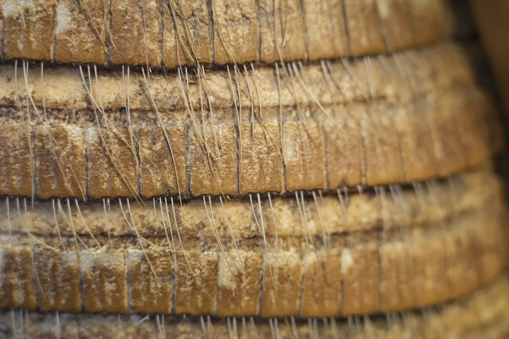
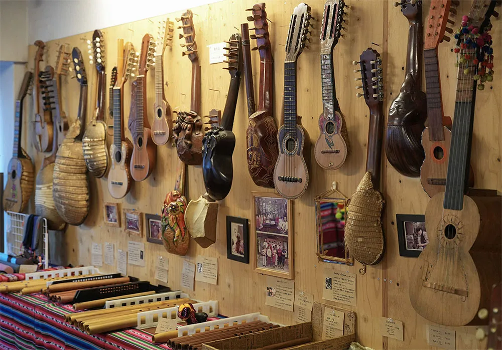

A más de tres mil metros de altura, donde la vihuela renacentista traída por los conquistadores se quebraba por la sequedad del aire andino, las manos campesinas inventaron un instrumento diminuto que canta con la voz del viento y de las aves de la puna. Una indagación sobre el charango, la luthería de caparazón y madera, y la acústica del despojo en los Andes.
Quien haya caminado por las quebradas minerales de Potosí, por las laderas secas de Ayacucho o por la inmensidad desolada del lago Titicaca sabrá que la atmósfera del altiplano andino posee una acústica singular, transparente y sobrecogedora, donde la ausencia de vegetación frondosa y la delgadez del aire a cuatro mil metros de altura impiden que los sonidos reverberen con calidez. En esa meseta helada de piedras y pajonales de ichu, donde el viento ruge con una furia mineral que parece empeñada en apagar la voz humana, los conquistadores españoles desembarcaron en el siglo dieciséis portando consigo sus vihuelas de mano y sus guitarras barrocas de madera de ciprés, convencidos de que sus armonías cortesanas domesticarían el espíritu de las poblaciones sometidas a las minas.

Pero ocurrió que la vihuela europea, nacida en los valles húmedos del Mediterráneo, no soportaba la sequedad implacable de la puna ni el frío cortante de las noches de la cordillera. Las maderas ensambladas con cola de pescado se desencajaban, las tapas armónicas se rajaban de arriba abajo con un chasquido sordo y las cuerdas de tripa de carnero se destemplaban en cuestión de minutos ante el cambio brusco de temperatura. Fue en ese cruce de despojo, asombro y necesidad donde los artesanos indígenas quechua y aymara realizaron un acto de apropiación técnica que cambió para siempre el mapa musical de América: redujeron el tamaño del instrumento a las proporciones de su propio regazo y construyeron una caja de resonancia con el único material que la puna les ofrecía sin quebrarse: el caparazón córneo del armadillo quirquincho.
Aquel primer charango de quirquincho —llamado en lengua originaria kirkinchu— era una obra maestra de ingeniería biológica adaptativa. El caparazón convexo del animal, desprovisto de carne y secado al sol del altiplano, ya poseía de manera natural la forma de una media calabaza hueca con sus placas óseas imbricadas, dotada de una rigidez mineral que resistía todas las inclemencias climáticas. Sobre ese cuenco biológico el luthier adaptaba un mástil corto de madera dura de soto o de quishuar, pegaba una tapa armónica de abeto o pino blanco talado en los valles templados, y tendía diez cuerdas de metal o de tripa ordenadas en cinco órdenes dobles.
La afinación de esas cuerdas encierra un secreto poético que desafía todas las leyes de la armonía tonal occidental. El charango no se afina de grave a agudo en una escala descendente como la guitarra clásica, sino que utiliza una afinación reentrante —el temple temple o temple diablo— donde la cuerda central de la tercera orden es la más aguda de todo el encordado. Esta disposición produce un fenómeno acústico deslumbrante: cuando la mano derecha del campesino rasguea las cuerdas con un golpe de abanico rápido y continuo llamado repique, el instrumento no emite acordes separados, sino una cascada ininterrumpida de sonidos cristalinos, menudos y centelleantes, parecida al agua de un deshielo que corre sobre piedras o al aleteo frenético de una bandada de pájaros que levanta el vuelo en la quebrada.
Con el paso de las décadas y la progresiva protección ecológica del quirquincho en los parques nacionales andinos, los maestros luthiers de Aiquile en Bolivia y de San Pedro de Cajas en Perú realizaron una segunda revolución artesanal: el charango vaciado en madera noble. En lugar de curvar costillas finas de madera como hacen los violeros europeos, el artesano andino toma un bloque macizo de madera de naranjillo, de jacarandá o de tarco y, armado con gubias afiladas y formones de diversos calibres, va vaciando la caja entera de una sola pieza, desde la pala del clavijero hasta el remate del fondo, como quien talla una escultura religiosa en una viga de templo.

El vaciado exige un oído y un tacto prodigiosos. El luthier golpea el fondo del instrumento con los nudillos a medida que va rebajando el grosor de la madera, escuchando el tono de la respuesta resonante para saber en qué sector dejar la pared con cuatro milímetros y dónde afinarla hasta dos milímetros y medio. Si la madera queda muy gruesa, el charango sonará sordo, apagado, sin brillo; si queda muy delgada, la tremenda tensión de las diez cuerdas metálicas arqueará el mástil y hundirá la tapa armónica antes de un año. Es una sabiduría callada, transmitida de padres a hijos en talleres donde el serrín huele a fruta seca y donde los clavijeros se ajustan a mano con paciencia de orfebre.
El charango es, ante todo, el compañero inseparable del caminante en la soledad de la puna. Los arrieros que bajan con recuas de mulas desde las minas hacia los valles llevan el instrumento terciado a la espalda, protegido dentro de una pequeña funda de lana de oveja tejida a telar; cuando la noche los sorprende en medio del páramo y el frío congela el aliento, se sientan al resguardo de una peña, afinan las cuerdas al temple campesino y rasguean un huayno o un yaraví para espantar a los malos espíritus y calentar el corazón con la memoria de su pueblo.
En las ciudades, los críticos acomodados intentaron durante mucho tiempo relegar al charango a la categoría de juguete rústico o instrumento menor, indigno de los escenarios de la música docta. No comprendían que en ese instrumento diminuto y agudo se concentra toda la resistencia espiritual de los pueblos andinos: un instrumento que nació de la herida de la conquista, que aprendió a cantar con la coraza de un animal perseguido y que hoy sigue alzando su voz de cristal sobre la inmensidad de las cordilleras, recordándonos que en América Latina hasta la madera más humilde sabe cómo cantar la libertad.
Fuentes.
- Cavour, Ernesto (1980). El charango: Su historia, su luthería y sus maestros. Producciones Cavour.
- Arguedas, José María (1975). Formación de una cultura nacional indoamericana: Música y sociedad en los Andes. Siglo XXI.
- Romero, Raúl (2001). Debating Diversity: Commercial Identity and Popular Music in the Peruvian Andes. Oxford University Press.
Investigación sobre etnomusicología andina y luthería tradicional en Bolivia y Perú.
Fuentes consultadas el 19.11.2026. Análisis e interpretación: RUMMOR. Edición privada para revisión.